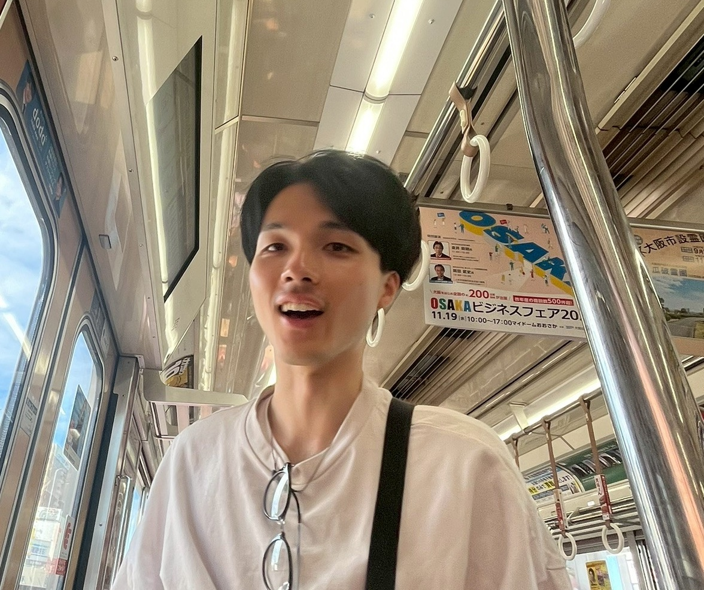
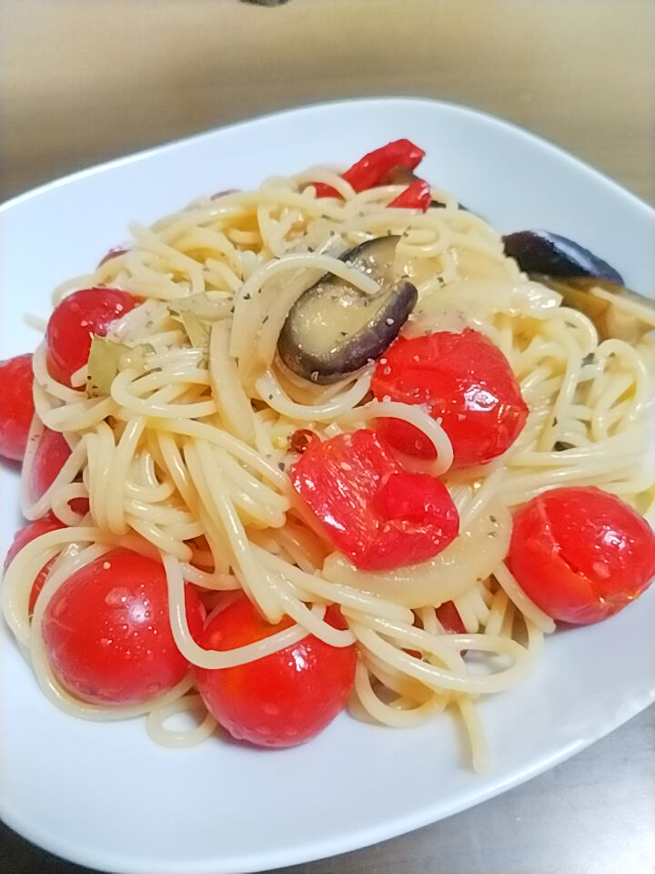
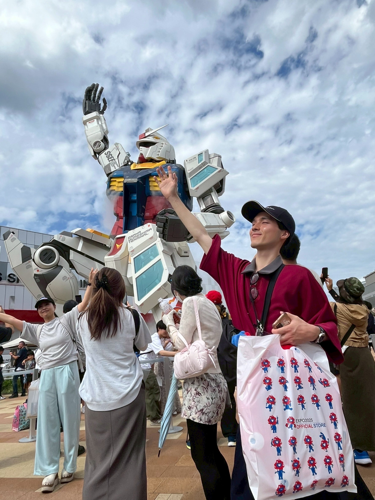

About Me

鈴木 暁満（すずき きょうま）
新潟県出身の大学生です。新潟県産のお米で生きています。
Career & Experiences
筑波大学 理工学群 工学システム学類
2022年4月 - 現在
工学の基礎から応用まで幅広く学習。機械工学を学んでおり、ロボット開発を行っています。
筑波大学大学院
2026年4月-（予定）
大学院進学予定。
サークル
2023年
学園祭実行委員会の委員長として、コロナ禍明け初の対面開催を実現しました。
雙峰祭公式サイト2024年 - 2025
新入生歓迎委員会の副委員長（代行）として、委員会の立ち上げから新規企画の運営までを担いました。
新入生歓迎委員会公式サイトSkills & Interests
プログラミング言語
- C, C++, C#
- Python
マークアップ・ツール
- LaTeX, Typst
- Git, GitHub
フレームワーク等
- Unity
- Arduino (電子工作)
- SolidWorks
Hobbies
料理
日常的に調理を楽しんでおり、食材や調理法を工夫して新しいレシピに挑戦しています。SNSなどで情報を収集し、レパートリーを広げています。
旅行
長期休みには旅行に行きます！主に国内
特撮

幼少期からの趣味で、仮面ライダーや戦隊モノが好きです。特にロボットやアイテムが好きです。おもちゃ大好き